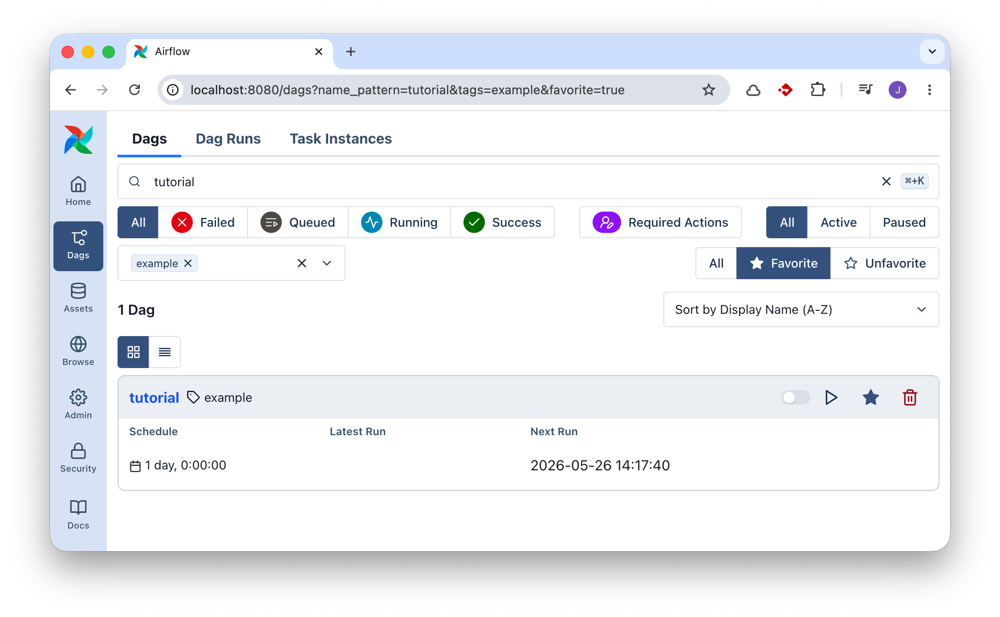
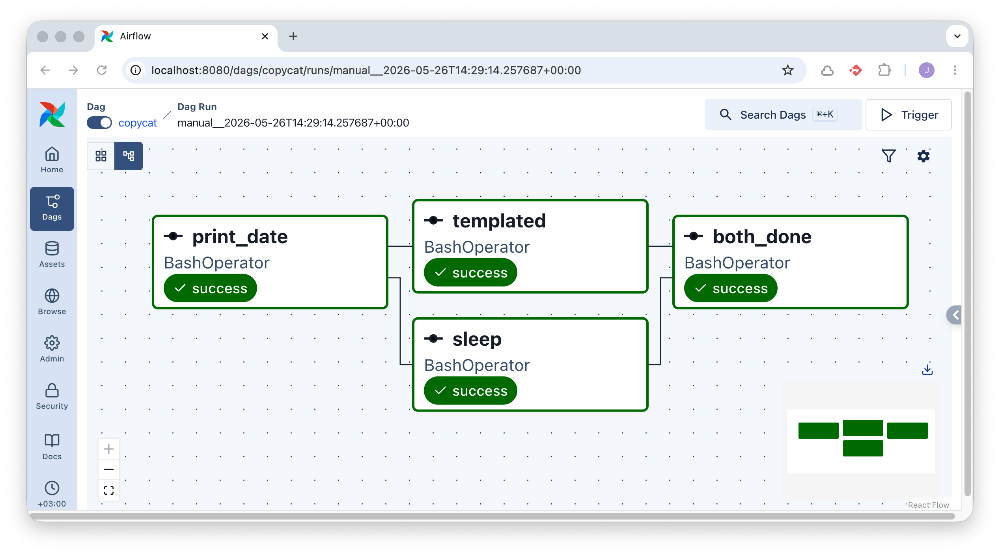
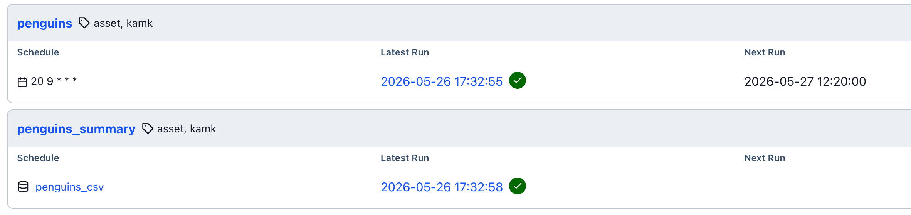

ORC01: Apache Airflow
Apache Airflow on työnkulkujen orkestrointityökalu. Siinä työnkulku kuvataan DAGina (Directed Acyclic Graph): joukko tehtäviä (task), niiden väliset riippuvuudet ja ajastussääntö. Airflow'n Scheduler tunnistaa, milloin DAG on aika suorittaa, jonottaa tehtävät ja antaa ne Executor-prosessin suoritettavaksi. Web UI näyttää työnkulkujen tilan reaaliajassa ja tarjoaa käyttöliittymän manuaaliseen käynnistämiseen sekä lokien selaamiseen.
Tässä harjoituksessa ajetaan Airflow'ta paikallisesti Docker Composessa.
Voit tutustua myös Airflow 101: Building Your First Workflow-tutoriaaliin, joka on tämän harjoituksen pohjaesimerkki ja lähtökohta. Tämä on yksinkertaistettu versio samasta. Tutustu myös Quick Start-ohjeeseen. Dockeriin liittyvä ohjeistus löytyy Running Airflow in Docker-sivulta.
Esivaatimukset
- Docker ja Docker Compose
Valmistelut: Airflow-ympäristö
Lataa Docker Compose -tiedosto
Luo hakemisto harjoitustasi varten, esimerkiksi airflow-harjoitus/. Luo sinne alihakemistot dags/ ja data/. Lisää hakemistoon docker-compose.yaml (tai sama tiedosto tuoreemmalla compose.yaml nimellä). Tiedsoton sisältö on niin pitkä, etten listaa sitä alla kokonaisuudessaan. Lataa tiedosto alla olevalla komennolla, jos sinulla curl tai wget asennettuna:
# curl
curl -LfO 'https://airflow.apache.org/docs/apache-airflow/3.2.1/docker-compose.yaml'
# ...tai wget
wget 'https://airflow.apache.org/docs/apache-airflow/3.2.1/docker-compose.yaml'
Jos sinulla ei ole jostain syystä kumpaakaan, voit ladata selaimella navigoimalla yllä olevaan URL:iin. Korostan, että on suositeltavaa silmäillä sivussa Airflow:n omaa, virallista dokumentaatiota, jonka pohjalta tämä harjoitus on rakennettu. Se löytyy osoitteesta Running Airflow in Docker.
Initialisoi konfiguraatio
Älä aja sokkona docker compose up -komentoa, vaan noudata ohjeistusta ja aja ensin initilisointi. Tarkat ohjeet löytyy Airflow:n dokumentaatiosta, mutta alla on TLDR:
# Jos sinulla on Linux, aja:
mkdir -p ./dags ./logs ./plugins ./config
echo -e "AIRFLOW_UID=$(id -u)" > .env
# Jos sinulla on jokin muu OS, voit luoda tyhjän .env-tiedoston, jotta ei tule herjoja
touch .env
# Ja sitten:
docker compose run airflow-cli airflow config list
Suosittelen lämpimästi tässä välissä silmäilemään docker-compose.yaml-tiedoston sisältöä. Tutustu pintapuoleisesti eri palveluihin ja eri bind mountteihin.
Initialisoi tietokanta
Tämä ohje pätee kaikkiin käyttöjärjestelmiin:
# Tämä ajetaan tasan kerran. Se luo PostgreSQL-tietokannan ja käyttäjätiedot,
# joita Airflow käyttää metatietokantanaan.
docker compose up airflow-init
Aja palvelu ylös
# Flägi -d on valinnainen; voit ajaa sen myös suoraan etualalla,
# nähden kaikki lokit ja välivaiheet ilman lisäkomentoja.
docker compose up -d
Odota, että palvelu on ylhäällä, ja testaa se:
- Avaa selaimella
localhost:8080. Näet Airflow'n Web UI:n. - Kirjaudu sisään:
airflow / airflow(käyttäjätunnus / salasana).
Tehtävänanto
1: Seuraa tutoriaalia
Kun jollakin kirjastolla on kattava tutorials/examples-osio, ei kannata lähteä merta edemmäs kalaan, vaan penkoa valmiita esimerkkejä. Tämän kurssin puitteissa riittää, että avaat Airflow 101: Building Your First Workflow-tutoriaalin ja tutustut sen sisältöön. Huomaat kyseisen DAG:n Details-välilehdeltä, että se on lokaatiossa /home/airflow/.local/lib/python3.13/site-packages/airflow/example_dags/tutorial.py kontin sisällä. Tämä on eri lokaatio kuin sinun dags/-hakemistosi, joka on kontin sisällä /opt/airflow/dags.

Kuva 1: Airflow:n tagilla example varustettu DAG nimeltään tutorial on hyvä paikka aloittaa. Kuvassa se on ainut näkyvä, koska olen klikannut siitä tähdellä suosikin, ja filtteröinyt vain tähdellä varustetut DAG:t.
2: Kopioi esimerkki ja tee siitä oma
Tällä tehtävällä varmistat, että dags/-hakemiston sijainti päätyy Airflow:n huomaamaksi. Kopioi edellisen kohdan tutoriaalista tiedoston sisältö ja tallenna se dags/-hakemistoon nimellä copycat.py. Tee tiedostoon seuraava muutos: muuta DAG:n dag_id-arvo copycat-nimiseksi. Tämä on vaatimus, koska DAG ID:n tulee olla uniikki. Halutessasi voit myös lisätä oman tagin, jolla löydät DAG:n helpommin Web UI:sta.
from airflow.sdk import DAG
with DAG(
"copycat", # <-- Muuta tämä!
#...,
tags=["example", "kamk"], # <-- Lisää oma tagi!
)
3: Löydä ja aktivoi copycat
Jos menet DAG-näkymään Web UI:hin, todennäköisesti huomaat, että copycat-DAG ei ilmesty välittömästi listaan. Tämä johtuu airflow.cfg-tiedoston asetuksista:
Jos haluat nopeuttaa tätä prosessia, voit käyttää CLI-komentoja. Koska ajat kokonaisuutta Docker Composessa, sinun tulee ajaa komennot näin:
# docker compose exec airflow-worker airflow <komento> [--optionit]
docker compose exec airflow-worker airflow info
Voit pakottaa DAG:n uudelleenlatauksen komennolla:
Kunhan saat DAG:n ilmestymään listaan, aktivoi se painamalla toggle-painiketta.
4: Tutustu CLI-komentoihin
Yllä mainitun tutoriaalin lopussaa on pari esimerkkikomentoa. Kokeile ajaa ne, mutta vaihta tutorial-nimi copycat-nimiseksi, ja kääri koko komento docker compose exec airflow-worker -komennon sisään. Esimerkiksi:
# Referenssi: airflow tasks list tutorial
docker compose exec airflow-worker airflow tasks list copycat
# Referenssi: airflow tasks test tutorial print_date 2015-06-01
docker compose exec airflow-worker airflow tasks test copycat print_date 2026-06-01
Tip
Huomaat, että output tulostuu ruudulle, mutta ei pääty logs/-hakemiston tiedostoihin. Tämä on test-komennon ominaisuus.
5: Aja DAG Web UI:sta
Aja DAG myös Web UI:sta. Tarkkaile, kuinka tehtävät etenevät success-tilaan. Etsi loki sekä graafisesta käyttöliittymästä että logs/-hakemistosta.
6: Aja backfill ja tutki kalenteria
Kokeile ajaa myös backfill. Se onnistuu helpoiten CLI:stä näin:
docker compose exec airflow-worker airflow backfill create --dag-id copycat --from-date 2026-05-01 --to-date 2026-05-07
Jos käyt Web UI:ssa DAG:n Calendar-välilehdellä, näet, että toukokuun alussa on useita vihreitä päiviä, jotka edustavat onnistuneita ajosuorituksia. Huomaat myös, että huomisesta alkaen on harmaataustaisia päiviä. Tämä johtuu siitä, että DAG on määritetty ajettavaksi päivittäin: schedule=timedelta(days=1).
Tip
Backfill on hyödyllinen, kun esimerkiksi lähdejärjestelmässä on ollut häiriö, ja olet noutanut väärää dataa. Tämä toki vaatii, että DAG on idempotentti, eli sen voi ajaa uudestaan ilman haittavaikutuksia, ja että kohdejärjestelmä tulee uusien tietojen kanssa toimeen.
7: Lisää t4
Aiemmin käytetyssä copycat-DAG:ssa on kolme taskia, joiden DAG on määritelty näin: t1 >> [t2, t3]. Lisää uusi task t4, joka suoritetaan vasta, kun sekä t2 että t3 ovat onnistuneet. Alla kuvassa on esimerkki siitä, miltä DAG:n pitäisi näyttää.

Kuva 2: DAG, jossa t1 on riippumaton, t2 ja t3 riippuvat t1:stä, ja t4 riippuu sekä t2:sta että t3:sta. Taskille t4 on annettu ID "both_done"
8: Tee dataa prosessoiva DAG
Warning
Tähän väliin on pakko varoittaa, että Airflow’n task-runneria ei yleensä ole tarkoitettu raskaiden dataoperaatioiden ajamiseen. Airflow’n ensisijainen rooli on orkestroida työnkulkuja: päättää mitä ajetaan, milloin ajetaan, missä järjestyksessä tehtävät suoritetaan ja miten virheistä toivutaan.
Taskit voivat toki sisältää Python-koodia, SQL-kyselyitä tai shell-komentoja, mutta tuotantoympäristössä raskas laskenta tai suuri datan prosessointi kannattaa yleensä delegoida ulkoiseen järjestelmään. Esimerkiksi SQL-tehtävä voi käynnistää työn tietokannassa, shell-komento voi kutsua Spark-jobia, ja Python-task voi tehdä API-kutsun erilliseen palveluun. Tavallista on käyttää REST API:a tai valmista provideria (ks. Providers), jolla Airflow käskyttää erillistä data-alustaa, tietokantaa tai muuta järjestelmää, kuten Databricksiä, Snowflakea, BigQueryä tai Spark-klusteria.
Airflow 3:n Asset-konsepti (aiemmin Datasets) ei tarkoita, että Airflow toimisi varsinaisena datavarastona. Asset on looginen kuvaus dataresurssista, kuten tiedostosta, taulusta tai objektivaraston polusta. Sen avulla voidaan mallintaa DAGien välisiä riippuvuuksia ja käynnistää työnkulkuja, kun jokin dataresurssi päivittyy. Itse data kannattaa säilyttää tarkoitukseen sopivassa järjestelmässä, kuten tietokannassa, data warehousessa, data lakessa tai objektivarastossa. Assets-esimerkeissä viitataankin S3-buckettiin: tämä olisi parempi tapa kuin lokaali tiedosto. Lokaalin tiedoston käyttö on harjoituksellisista syistä helppoa ja siksi käytössä.
Luo DAG, jonka nimi on esimerkiksi dags/penguins.py. Koodin kirjoittaminen veisi huomiota itse data-alustoista, joten se on tarjottuna alla valmiiksi.
import importlib.util
import logging
from datetime import datetime, timedelta
from airflow.sdk import Asset, DAG, task
log = logging.getLogger(__name__)
PENGUINS_SOURCE_URL = "https://raw.githubusercontent.com/mwaskom/seaborn-data/master/penguins.csv"
PENGUINS_OUTPUT_PATH = "/opt/airflow/data/penguins.csv"
PENGUINS_ASSET = Asset(
uri=f"file://{PENGUINS_OUTPUT_PATH}",
name="penguins_csv",
)
def is_venv_installed() -> bool:
return importlib.util.find_spec("virtualenv") is not None
def _process_penguins(csv_url: str, output_path: str) -> str:
import pandas as pd
from pathlib import Path
dataframe = pd.read_csv(csv_url)
dataframe["body_mass_kg"] = (dataframe["body_mass_g"] / 1000).round(3)
preview = dataframe.head(10)
print("Palmer Penguins preview:")
print(preview.to_string(index=False))
output_file = Path(output_path)
output_file.parent.mkdir(parents=True, exist_ok=True)
dataframe.to_csv(output_file, index=False)
print(f"Stored {len(dataframe)} rows in {output_file}")
return str(output_file)
@task(task_id="virtualenv_missing")
def virtualenv_missing() -> None:
raise RuntimeError(
"The penguins DAG needs virtualenv so it can install pandas for @task.virtualenv. "
"Install virtualenv in the Airflow environment and refresh the DAG."
)
if is_venv_installed():
process_penguins = task.virtualenv(
task_id="process_penguins",
requirements=["pandas"],
system_site_packages=False,
outlets=[PENGUINS_ASSET],
)(_process_penguins)
else:
process_penguins = None
with DAG(
"penguins",
default_args={
"depends_on_past": False,
"retries": 1,
"retry_delay": timedelta(minutes=1),
},
schedule="20 9 * * *",
start_date=datetime(2026, 1, 1),
catchup=False,
tags=["asset", "kamk"],
) as dag:
if process_penguins is None:
log.warning(
"virtualenv is not installed, so the penguins task cannot create its pandas environment."
)
virtualenv_missing()
else:
process_penguins(
csv_url=PENGUINS_SOURCE_URL,
output_path=PENGUINS_OUTPUT_PATH,
)
Tip
Voit testata sen tässä välissä CLI:stä, jos haluat:
Lopuksi käy ajamassa se Web UI:sta, ja varmista, että kaikki taskit onnistuvat. Tutki lokitiedot. Siellä pitäisi näkyä 10 riviä Penguins-dataa tulostettuna. Lisäksi tiedoston pitäisi löytyä Assets-välilehdeltä, ja sen rivimäärän voi laskea esimerkiksi näin:
docker compose exec airflow-worker wc -l /opt/airflow/data/penguins.csv
# Output: 345 /opt/airflow/data/penguins.csv
9: Käsittele luotua Assettia
Luo vielä toinen DAG, jonka trigger on yllä luotu Asset. Tarkoitus on, että se ajetaan aina, kun kyseistä assettia päivitetään edellisen (tai jonkin muun) DAG:n toimesta. Koodi on valmiiksi annettuna alla:
from datetime import datetime
from airflow.sdk import Asset, DAG, task
PENGUINS_ASSET = Asset(
uri="file:///opt/airflow/data/penguins.csv",
name="penguins_csv",
)
with DAG(
"penguins_summary",
schedule=[PENGUINS_ASSET],
start_date=datetime(2026, 1, 1),
catchup=False,
tags=["asset", "kamk"],
) as dag:
@task
def summarize_penguins():
import pandas as pd
df = pd.read_csv("/opt/airflow/data/penguins.csv")
print(df.groupby("species")["body_mass_kg"].mean())
summarize_penguins()

Kuva 3: Dags-näkymässä on huomattavissa, että penguins_summary-DAG:lla on triggerinä penguins_csv-assetti, ja sen latest run on pari sekuntia penguins:n, joka käynnistettiin manuaalisesti, jälkeen.
Videolla esitettävä
Warning
Tämä lista on WORK IN PROGRESS. Tarkista se.
Tässä harjoituksessa videon tulee osoittaa vähintään seuraavat asiat:
- Kerrot, kuinka monta tuntia käytit harjoitukseen.
- Selität lyhyesti, mikä on Apache Airflow ja mikä on DAGin rooli (yleisönä toisen tiimin jäsen, ei datainsinööri).
- Käynnistät Docker Compose -palvelun videolla (
docker compose up -d) tai osoitat, että se on jo käynnissä. - Avaat Web UI:n (
localhost:8080) ja näytät, mistäcopycat-DAG löytyy. - Ajat DAGin manuaalisesti ja näytät Graph-näkymästä, kuinka taskit etenevät
success-tilaan (mukaan lukient4). - Avaat yhden taskin lokitiedot Web UI:sta ja esität, mitä se teki.
- Esittelet, kuinka
penguinsjapenguins_summary-DAG:t hyödyntävät Assettia, ja kuinkapenguins_summary-DAG käynnistyy, kunpenguins-DAG päivittää assetin.